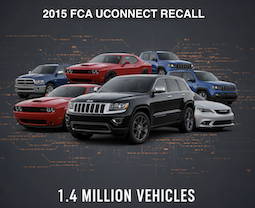
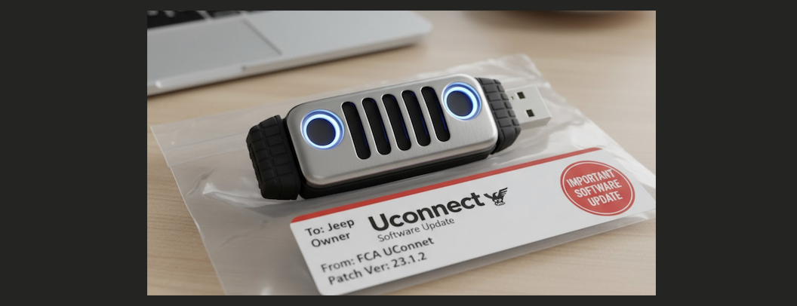

Impact: The 1.4 Million Vehicle Recall
The public demonstration of the hack was a seismic event for the automotive industry. The *Wired* article, published on July 21, 2015, created an immediate and massive media firestorm. It transformed the abstract concept of "cybersecurity" into a terrifying, tangible threat: someone could remotely control your car on the highway. Consumer confidence was shaken, and U.S. senators quickly called for an investigation into connected car security.
Facing immense pressure and a clear safety crisis, Fiat Chrysler Automobiles (FCA) acted with uncharacteristic speed for a software issue. Just three days after the article was published, FCA announced a formal safety recall for 1.4 million vehicles in the U.S. The recall affected a wide range of models equipped with the 8.4-inch Uconnect touchscreen, including the 2014-2015 Jeep Grand Cherokee and Cherokee, 2015 Dodge Challenger, Charger, and Chrysler 200, and several others.
The patch itself became a logistical nightmare and a case study in poor incident response. FCA's initial "fix" was to mail USB drives containing the software update to all 1.4 million owners. They instructed customers to plug the drive into their car's USB port and perform the update themselves. This strategy was widely criticized. It placed the burden of a critical security patch on non-technical consumers, many of whom simply ignored the update, leaving their vehicles vulnerable. This clumsy response highlighted that the industry was unprepared for large-scale software patches.
